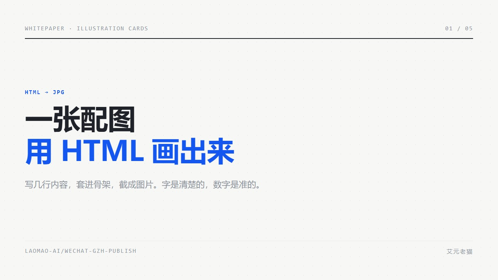
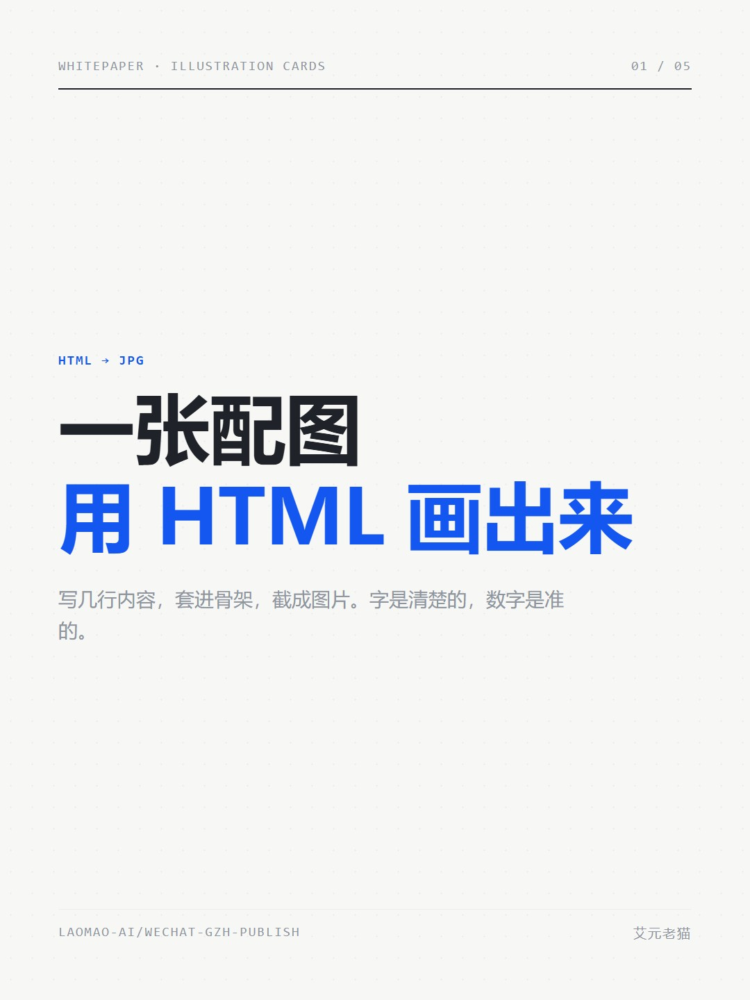
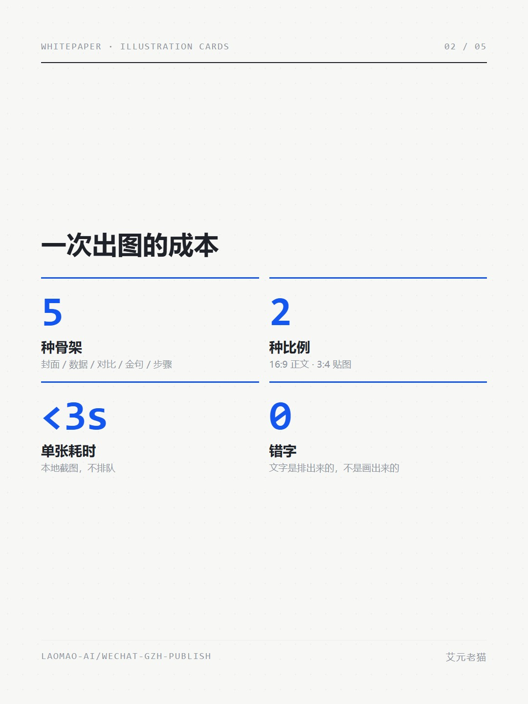
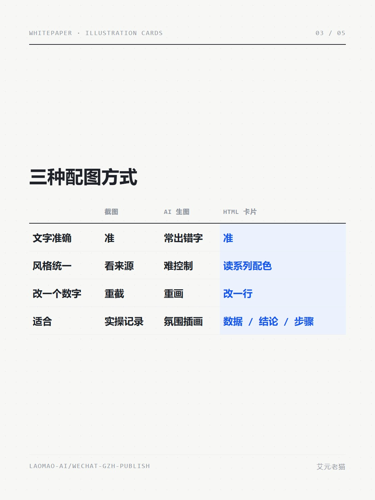
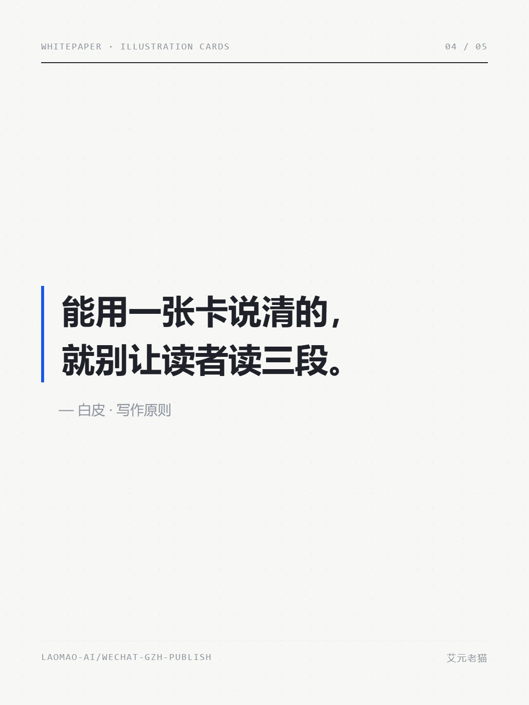
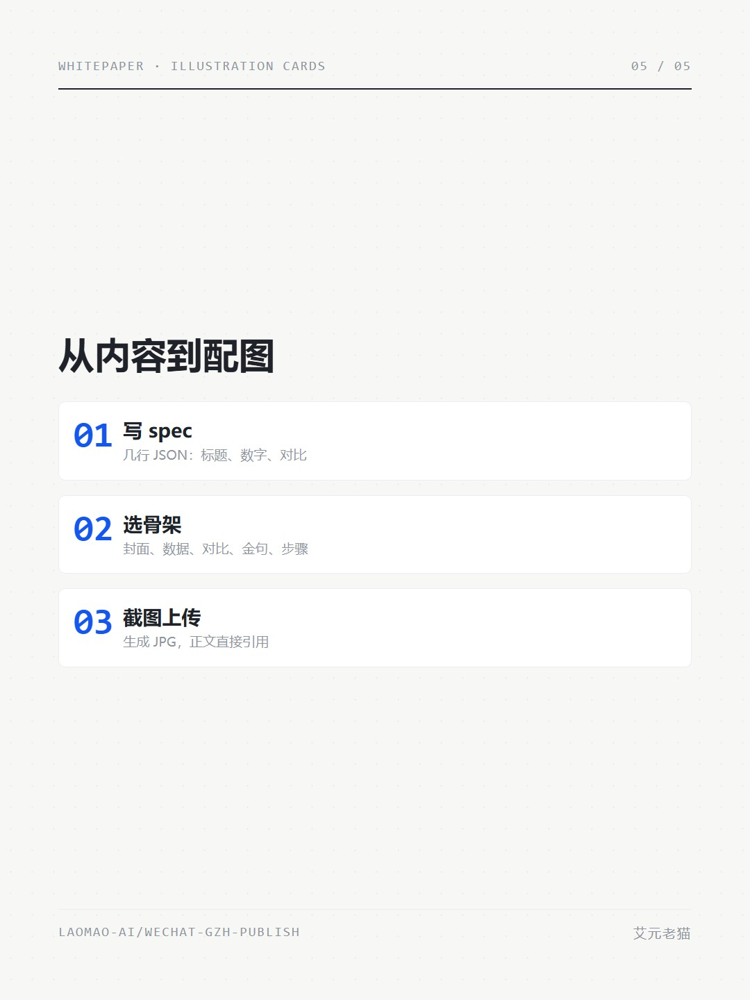
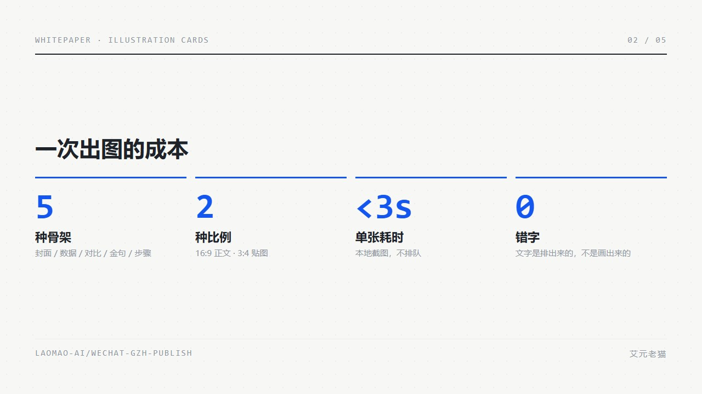
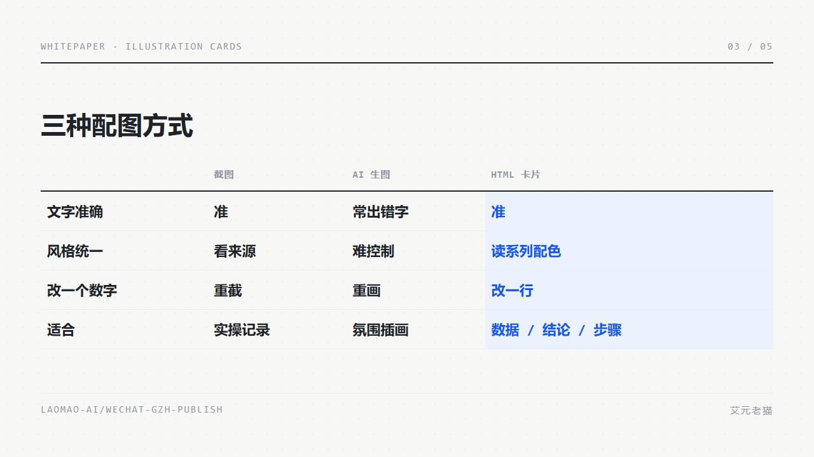
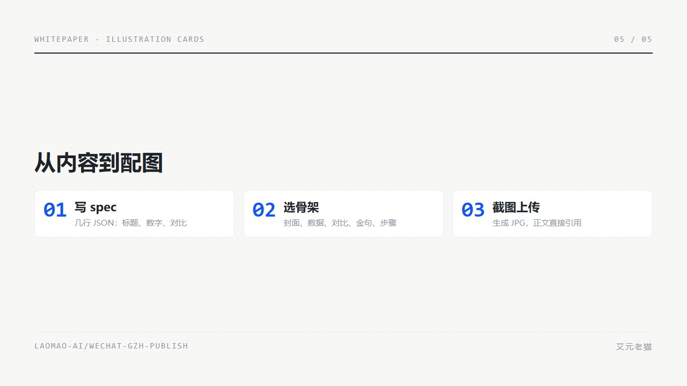
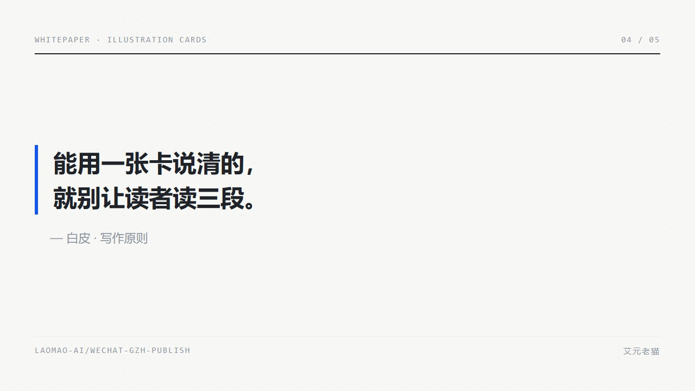

<section style="max-width:677px;margin:0 auto;padding:0;background:#FFFFFF;font-family:-apple-system,BlinkMacSystemFont,'PingFang SC','Hiragino Sans GB','Microsoft YaHei',sans-serif;color:#373C43;line-height:2.0;letter-spacing:0.8px;"><section style="padding:0 16px;"><section style="margin:4px 0 26px;"><section style="margin:0;border-radius:10px;overflow:hidden;line-height:0;"></section><p style="margin:10px 0 0;font-size:12px;text-align:center;color:#8F959E;"><span leaf="">一张配图，用 HTML 画出来</span></p></section><section style="margin:0 0 30px;padding:14px 16px;background:#F7F8FA;border-radius:8px;"><p style="margin:0;font-size:14px;line-height:1.95;color:#373C43;letter-spacing:0.5px;"><span leaf="">写公众号最费时间的，往往不是文字，是配图。</span></p></section><p style="margin:0 0 28px;font-size:15px;line-height:2.0;color:#373C43;letter-spacing:0.8px;text-align:justify;"><span leaf="">AI 生图画氛围很好，但一碰到数字和中文就容易出错。截图准确，风格却跟着来源走。我们换了个思路：配图也用排版来做。</span></p><section style="margin:0 0 40px;"><section style="display:flex;justify-content:space-between;margin:0 0 10px;"><span style="font-size:11px;color:#1F2329;font-family:Menlo,Consolas,'SF Mono',Monaco,monospace;font-weight:700;letter-spacing:0;"><span leaf="">3 PARTS · CONTENT MAP</span></span><span style="font-size:11px;color:#8F959E;"><span leaf="">左右滑动 →</span></span></section><section style="display:flex;overflow-x:auto;padding:0 0 6px;"><section style="flex-shrink:0;width:44%;margin-right:8px;padding:14px 14px 12px;background:#F7F8FA;border-radius:10px;box-sizing:border-box;"><p style="margin:0 0 10px;font-size:11px;line-height:1.5;color:#1456F0;font-family:Menlo,Consolas,'SF Mono',Monaco,monospace;font-weight:700;letter-spacing:0;"><span leaf="">PART 01</span></p><p style="margin:0 0 6px;font-size:15px;line-height:1.5;color:#1F2329;font-weight:800;"><span leaf="">先看结论</span></p><p style="margin:0;font-size:10px;line-height:1.6;color:#8F959E;font-family:Menlo,Consolas,'SF Mono',Monaco,monospace;letter-spacing:0;"><span leaf="">RESULTS</span></p></section><section style="flex-shrink:0;width:44%;margin-right:8px;padding:14px 14px 12px;background:#F7F8FA;border-radius:10px;box-sizing:border-box;"><p style="margin:0 0 10px;font-size:11px;line-height:1.5;color:#1456F0;font-family:Menlo,Consolas,'SF Mono',Monaco,monospace;font-weight:700;letter-spacing:0;"><span leaf="">PART 02</span></p><p style="margin:0 0 6px;font-size:15px;line-height:1.5;color:#1F2329;font-weight:800;"><span leaf="">为什么不用生图</span></p><p style="margin:0;font-size:10px;line-height:1.6;color:#8F959E;font-family:Menlo,Consolas,'SF Mono',Monaco,monospace;letter-spacing:0;"><span leaf="">WHY HTML</span></p></section><section style="flex-shrink:0;width:44%;margin-right:8px;padding:14px 14px 12px;background:#F7F8FA;border-radius:10px;box-sizing:border-box;"><p style="margin:0 0 10px;font-size:11px;line-height:1.5;color:#1456F0;font-family:Menlo,Consolas,'SF Mono',Monaco,monospace;font-weight:700;letter-spacing:0;"><span leaf="">PART 03</span></p><p style="margin:0 0 6px;font-size:15px;line-height:1.5;color:#1F2329;font-weight:800;"><span leaf="">怎么做出来</span></p><p style="margin:0;font-size:10px;line-height:1.6;color:#8F959E;font-family:Menlo,Consolas,'SF Mono',Monaco,monospace;letter-spacing:0;"><span leaf="">HOW IT WORKS</span></p></section></section></section><section style="display:flex;align-items:center;margin:52px 0 24px;"><section style="flex-shrink:0;width:44px;text-align:center;"><p style="margin:0;font-size:24px;line-height:1.1;color:#1456F0;font-family:Menlo,Consolas,'SF Mono',Monaco,monospace;font-weight:800;letter-spacing:0;"><span leaf="">01</span></p><p style="margin:3px 0 0;font-size:9px;line-height:1.3;color:#8F959E;font-family:Menlo,Consolas,'SF Mono',Monaco,monospace;font-weight:700;letter-spacing:0;"><span leaf="">PART</span></p></section><section style="flex-shrink:0;width:1px;height:36px;margin:0 14px 0 12px;background:#A1BBF9;"><span leaf=""><br></span></section><section style="flex:1;min-width:0;"><p style="margin:0;font-size:18px;line-height:1.45;color:#1F2329;font-weight:800;letter-spacing:0.5px;"><span leaf="">先看结论</span></p><p style="margin:4px 0 0;font-size:10px;line-height:1.5;color:#8F959E;font-family:Menlo,Consolas,'SF Mono',Monaco,monospace;letter-spacing:0;"><span leaf="">RESULTS</span></p></section></section><p style="margin:0 0 28px;font-size:15px;line-height:2.0;color:#373C43;letter-spacing:0.8px;text-align:justify;"><span leaf="">一套骨架，一次出齐。下面是这篇文章的全部配图，左右滑动查看：</span></p><section style="margin:10px 0 26px;"><section style="display:flex;overflow-x:auto;padding:2px 2px 8px;"><section style="flex-shrink:0;width:72%;margin-right:8px;"><section style="margin:0;border-radius:10px;overflow:hidden;line-height:0;box-shadow:0 4px 14px rgba(31,35,41,0.08);border:none;"></section><p style="margin:6px 0 0;font-size:11px;color:#8F959E;"><span leaf="">封面</span></p></section><section style="flex-shrink:0;width:72%;margin-right:8px;"><section style="margin:0;border-radius:10px;overflow:hidden;line-height:0;box-shadow:0 4px 14px rgba(31,35,41,0.08);border:none;"></section><p style="margin:6px 0 0;font-size:11px;color:#8F959E;"><span leaf="">数据</span></p></section><section style="flex-shrink:0;width:72%;margin-right:8px;"><section style="margin:0;border-radius:10px;overflow:hidden;line-height:0;box-shadow:0 4px 14px rgba(31,35,41,0.08);border:none;"></section><p style="margin:6px 0 0;font-size:11px;color:#8F959E;"><span leaf="">对比</span></p></section><section style="flex-shrink:0;width:72%;margin-right:8px;"><section style="margin:0;border-radius:10px;overflow:hidden;line-height:0;box-shadow:0 4px 14px rgba(31,35,41,0.08);border:none;"></section><p style="margin:6px 0 0;font-size:11px;color:#8F959E;"><span leaf="">金句</span></p></section><section style="flex-shrink:0;width:72%;margin-right:0px;"><section style="margin:0;border-radius:10px;overflow:hidden;line-height:0;box-shadow:0 4px 14px rgba(31,35,41,0.08);border:none;"></section><p style="margin:6px 0 0;font-size:11px;color:#8F959E;"><span leaf="">步骤</span></p></section></section><p style="margin:2px 0 0;font-size:11px;text-align:right;color:#8F959E;"><span leaf="">左右滑动查看 5 张 →</span></p><p style="margin:10px 0 0;font-size:12px;line-height:1.6;text-align:center;color:#8F959E;"><span leaf="">同一套配色下的五种骨架，3:4 贴图版</span></p></section><section style="display:flex;align-items:center;margin:52px 0 24px;"><section style="flex-shrink:0;width:44px;text-align:center;"><p style="margin:0;font-size:24px;line-height:1.1;color:#1456F0;font-family:Menlo,Consolas,'SF Mono',Monaco,monospace;font-weight:800;letter-spacing:0;"><span leaf="">02</span></p><p style="margin:3px 0 0;font-size:9px;line-height:1.3;color:#8F959E;font-family:Menlo,Consolas,'SF Mono',Monaco,monospace;font-weight:700;letter-spacing:0;"><span leaf="">PART</span></p></section><section style="flex-shrink:0;width:1px;height:36px;margin:0 14px 0 12px;background:#A1BBF9;"><span leaf=""><br></span></section><section style="flex:1;min-width:0;"><p style="margin:0;font-size:18px;line-height:1.45;color:#1F2329;font-weight:800;letter-spacing:0.5px;"><span leaf="">为什么不用生图</span></p><p style="margin:4px 0 0;font-size:10px;line-height:1.5;color:#8F959E;font-family:Menlo,Consolas,'SF Mono',Monaco,monospace;letter-spacing:0;"><span leaf="">WHY HTML</span></p></section></section><section style="margin:36px 0 14px;"><p style="margin:0 0 8px;"><span style="font-size:11px;color:#FFFFFF;background:#1456F0;padding:2px 8px;border-radius:3px;font-family:Menlo,Consolas,'SF Mono',Monaco,monospace;font-weight:700;letter-spacing:0;"><span leaf="">CASE 01</span></span></p><p style="margin:0;font-size:17px;line-height:1.6;color:#1F2329;font-weight:800;"><span leaf="">数字要准</span></p></section><p style="margin:0 0 28px;font-size:15px;line-height:2.0;color:#373C43;letter-spacing:0.8px;text-align:justify;"><span leaf="">数据卡里的每个数字都是直接排出来的，不存在“画歪了”的问题。改一个数字，只需要改一行。</span></p><section style="margin:8px 0 26px;"><section style="margin:0;border-radius:10px;overflow:hidden;line-height:0;border:none;box-shadow:0 2px 12px rgba(15,23,42,0.08);"></section><p style="margin:10px 0 0;font-size:12px;text-align:center;color:#8F959E;"><span leaf="">一次出图的成本</span></p></section><section style="margin:36px 0 14px;"><p style="margin:0 0 8px;"><span style="font-size:11px;color:#FFFFFF;background:#1456F0;padding:2px 8px;border-radius:3px;font-family:Menlo,Consolas,'SF Mono',Monaco,monospace;font-weight:700;letter-spacing:0;"><span leaf="">CASE 02</span></span></p><p style="margin:0;font-size:17px;line-height:1.6;color:#1F2329;font-weight:800;"><span leaf="">三种方式对比</span></p></section><p style="margin:0 0 28px;font-size:15px;line-height:2.0;color:#373C43;letter-spacing:0.8px;text-align:justify;"><span leaf="">截图适合记录实操，生图适合营造氛围，讲数据、结论和步骤时，卡片更合适。</span></p><section style="margin:8px 0 26px;"><section style="margin:0;border-radius:10px;overflow:hidden;line-height:0;border:none;box-shadow:0 2px 12px rgba(15,23,42,0.08);"></section><p style="margin:10px 0 0;font-size:12px;text-align:center;color:#8F959E;"><span leaf="">三种配图方式</span></p></section><section style="display:flex;align-items:center;margin:52px 0 24px;"><section style="flex-shrink:0;width:44px;text-align:center;"><p style="margin:0;font-size:24px;line-height:1.1;color:#1456F0;font-family:Menlo,Consolas,'SF Mono',Monaco,monospace;font-weight:800;letter-spacing:0;"><span leaf="">03</span></p><p style="margin:3px 0 0;font-size:9px;line-height:1.3;color:#8F959E;font-family:Menlo,Consolas,'SF Mono',Monaco,monospace;font-weight:700;letter-spacing:0;"><span leaf="">PART</span></p></section><section style="flex-shrink:0;width:1px;height:36px;margin:0 14px 0 12px;background:#A1BBF9;"><span leaf=""><br></span></section><section style="flex:1;min-width:0;"><p style="margin:0;font-size:18px;line-height:1.45;color:#1F2329;font-weight:800;letter-spacing:0.5px;"><span leaf="">怎么做出来</span></p><p style="margin:4px 0 0;font-size:10px;line-height:1.5;color:#8F959E;font-family:Menlo,Consolas,'SF Mono',Monaco,monospace;letter-spacing:0;"><span leaf="">HOW IT WORKS</span></p></section></section><section style="margin:8px 0 26px;"><section style="margin:0;border-radius:10px;overflow:hidden;line-height:0;border:none;box-shadow:0 2px 12px rgba(15,23,42,0.08);"></section><p style="margin:10px 0 0;font-size:12px;text-align:center;color:#8F959E;"><span leaf="">从内容到配图</span></p></section><p style="margin:0 0 28px;font-size:15px;line-height:2.0;color:#373C43;letter-spacing:0.8px;text-align:justify;"><span leaf="">给 AI 的指令只有一句：</span></p><section style="margin:6px 0 28px;border:1px solid #EBEDF0;border-radius:10px;overflow:hidden;"><p style="margin:0;padding:9px 14px;font-size:11px;line-height:1.6;color:#1456F0;font-family:Menlo,Consolas,'SF Mono',Monaco,monospace;font-weight:700;background:#F7F8FA;border-bottom:1px solid #EBEDF0;letter-spacing:0;"><span leaf="">PROMPT 01 · 生成配图 · 读系列配色</span></p><section style="padding:12px 14px 8px;"><p style="margin:0 0 6px;font-size:14px;line-height:1.9;color:#1F2329;letter-spacing:0.5px;"><span leaf="">把这篇文章的三个结论写成 spec.json，用白皮配色各出一张 16:9 卡片。</span></p></section></section><section style="margin:8px 0 26px;"><section style="margin:0;border-radius:10px;overflow:hidden;line-height:0;border:none;box-shadow:0 2px 12px rgba(15,23,42,0.08);"></section><p style="margin:10px 0 0;font-size:12px;text-align:center;color:#8F959E;"><span leaf="">金句卡</span></p></section><p style="margin:0 0 28px;font-size:15px;line-height:2.0;color:#373C43;letter-spacing:0.8px;text-align:justify;"><span leaf="">能用一张卡说清的，就别让读者读三段。</span></p><section style="margin:56px 0 22px;"><p style="margin:0 0 6px;font-size:11px;color:#8F959E;font-family:Menlo,Consolas,'SF Mono',Monaco,monospace;font-weight:700;letter-spacing:0;"><span leaf="">OUTLOOK</span></p><p style="margin:0;font-size:20px;line-height:1.5;color:#1F2329;font-weight:800;"><span leaf="">最后：你的配图最费时间的是哪一步？</span></p></section><section style="margin:40px 0 10px;padding:22px 0 0;border-top:1px solid #EBEDF0;"><p style="margin:0 0 10px;font-size:16px;line-height:1.8;color:#1F2329;font-weight:700;"><span leaf="">找图、做图，还是改图？</span></p><p style="margin:0;font-size:12px;line-height:1.9;color:#8F959E;"><span leaf="">感谢阅读。</span></p></section><section style="margin:34px 0 10px;"><section style="margin:0 0 18px;"><p style="margin:0 0 4px;font-size:12px;letter-spacing:2px;color:#8F959E;font-weight:700;"><span leaf="">往期 · 接着读</span></p><section style="display:flex;align-items:flex-start;padding:10px 0;border-top:1px dashed #EBEDF0;"><span style="flex-shrink:0;margin-right:10px;font-size:12px;line-height:1.7;color:#1456F0;font-family:Menlo,Consolas,'SF Mono',Monaco,monospace;font-weight:700;letter-spacing:0;"><span leaf="">01</span></span><section style="flex:1;"><p style="margin:0;font-size:14px;line-height:1.7;color:#1F2329;font-weight:700;"><span leaf="">六个原创主题，各适合写什么</span></p><p style="margin:2px 0 0;font-size:12px;line-height:1.7;color:#8F959E;"><span leaf="">主题实验室导览</span></p></section></section><section style="display:flex;align-items:flex-start;padding:10px 0;border-top:1px dashed #EBEDF0;"><span style="flex-shrink:0;margin-right:10px;font-size:12px;line-height:1.7;color:#1456F0;font-family:Menlo,Consolas,'SF Mono',Monaco,monospace;font-weight:700;letter-spacing:0;"><span leaf="">02</span></span><section style="flex:1;"><p style="margin:0;font-size:14px;line-height:1.7;color:#1F2329;font-weight:700;"><span leaf="">从 Markdown 到草稿箱，一次走完</span></p><p style="margin:2px 0 0;font-size:12px;line-height:1.7;color:#8F959E;"><span leaf="">发布流程</span></p></section></section></section><section style="display:flex;align-items:center;padding:14px;background:#EFF3FE;border-radius:10px;"><section style="flex-shrink:0;width:44px;height:44px;margin-right:12px;border-radius:22px;background:#1456F0;text-align:center;"><p style="margin:0;font-size:20px;line-height:44px;color:#FFFFFF;font-weight:800;"><span leaf="">艾</span></p></section><section style="flex:1;"><p style="margin:0;font-size:15px;line-height:1.5;color:#1F2329;font-weight:800;"><span leaf="">艾元老猫</span></p><p style="margin:3px 0 0;font-size:12px;line-height:1.7;color:#8F959E;"><span leaf="">记录用 AI 省掉重复劳动的真实做法。</span></p><p style="margin:6px 0 0;font-size:12px;line-height:1.6;color:#1456F0;font-weight:700;"><span leaf="">关注一下，下次实测更多工具。</span></p></section></section></section></section></section>